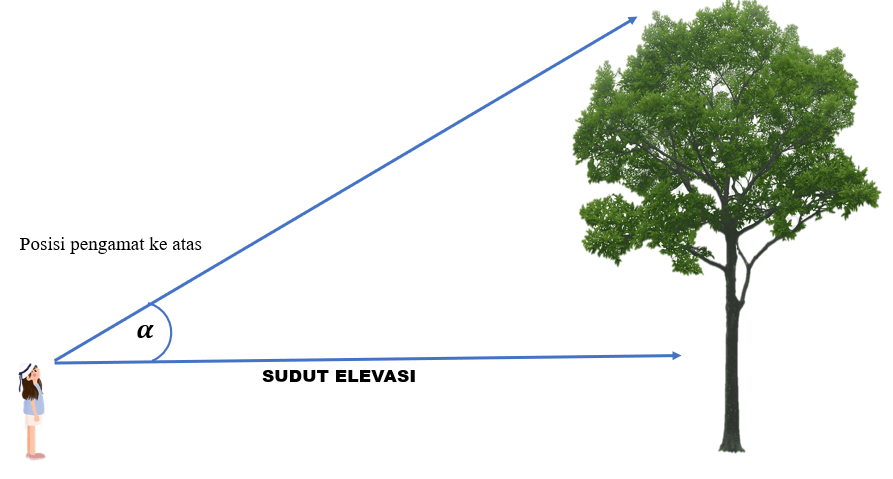
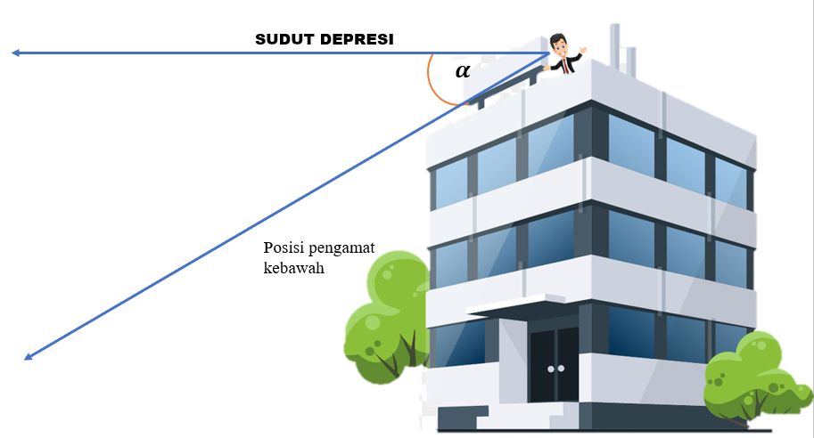

Sudut elevasi adalah sudut yang terbentuk antara garis lurus mendatar dengan pengamatan ke atas. Perhatikan Gambar 1.8
Gambar 1.8
Sudut depresi adalah sudut yang terbentuk antara garis lurus mendatar dengan pengamatan ke bawah. Perhatikan Gambar 1.9
Gambar 1.9